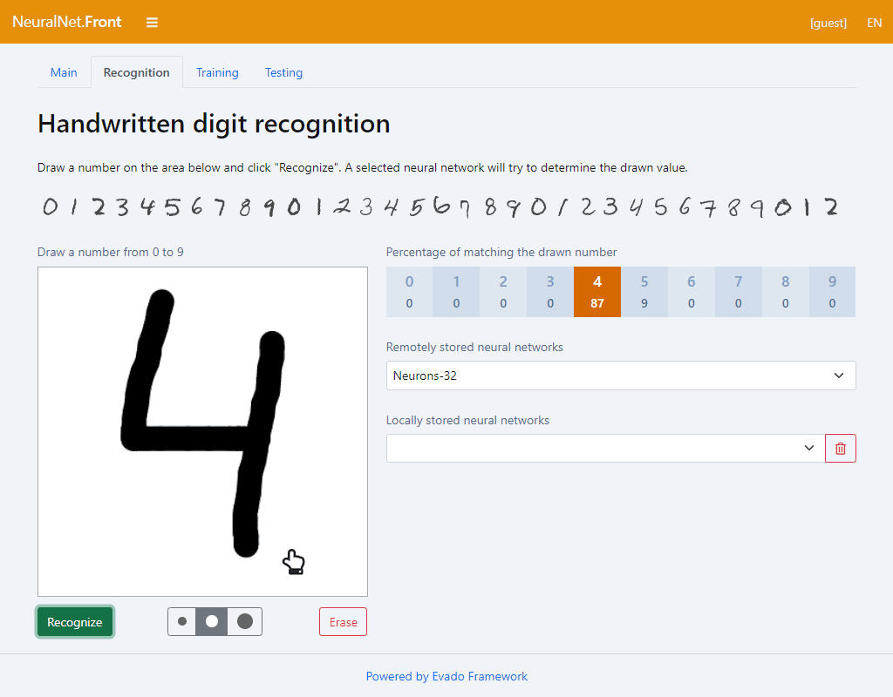

Neural Net
Handwritten digit recognition
Learning, testing and using neural networks in JavaScript

Implementation features
Training and testing neural networks in the browser.
An extensive database (MNIST) of several tens of thousands of samples.
Saving trained networks to local or remote storage.
Open source app code.
Details
Online demo
Open sources